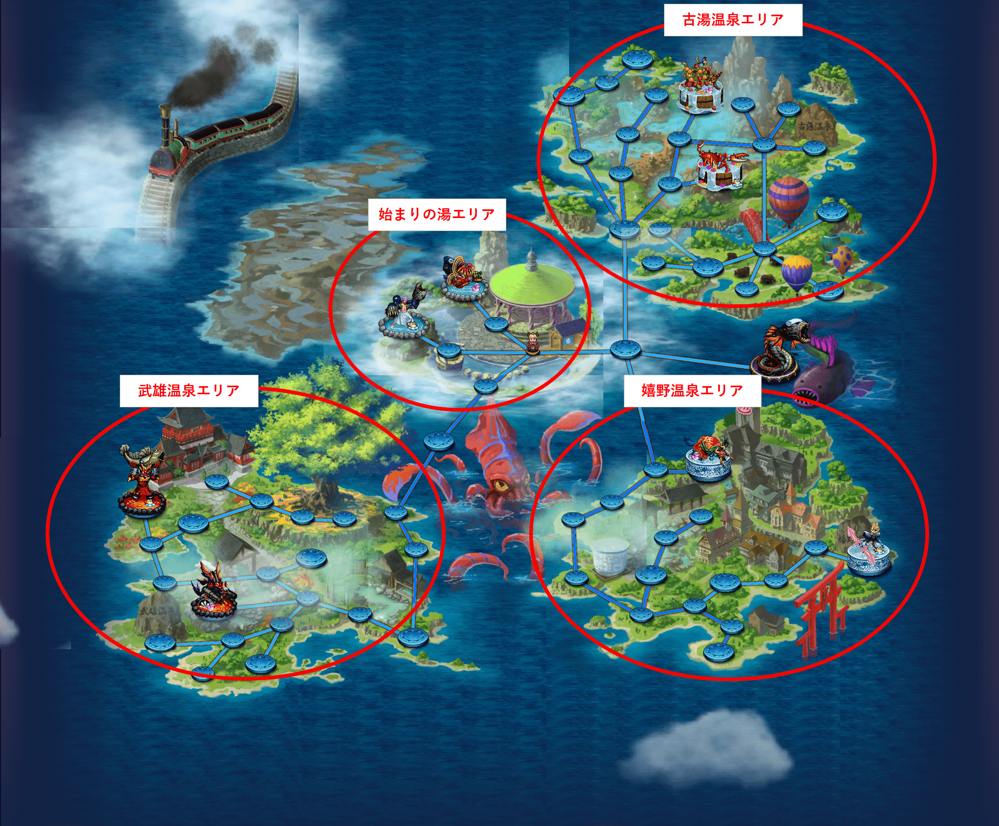

2021年のロマサガＲＳ佐賀県コラボを振り返る
ホーム > ロマサガＲＳ > ロマサガＲＳ佐賀コラボ_2021年はじめに
2021年の7月～8月にかけて、ロマサガＲＳのコラボイベント「ロマンシング佐賀 2021 サガ風呂」が開催されました。昨年同様、ずいぶんと凝ったコラボイベントでしたね。
佐賀県に関する情報満載なイベントでしたが、出来る限りの情報を昨年同様まとめてみたので是非見てみて下さい。
昨年の記事はこちら
今回のコラボの情報は、ロマサガRSだけではなく、佐賀県の広報部からもtwitterで情報発信されていました。
佐賀県の方からもこのように発信されるとなんだかうれしくなりますね。
【お知らせ】
— 佐賀県広報広聴課 (@saga_kouhou) July 29, 2021
『ロマンシング佐賀2021』と『ロマンシング サガ リ・ユニバース』のゲーム内コラボ第１弾開始✨
「みんなでいくばい！SaGa風呂制圧戦」を開催♨️
詳しくはこちら▼https://t.co/05XN0156pi#ロマ佐賀 pic.twitter.com/n2u91VpRPv
制圧戦全体マップ
昨年同様、制圧戦に力が入っていたのでまた制圧戦を中心にまとめていきたいと思います。
制圧戦の全体マップは下図のようになっていました。始まりの湯、古湯温泉、嬉野温泉、武雄温泉の4つのエリアにわかれ、各エリアにサガフロの4天王とサガフロ2の将魔が1体ずつの合計2体のボスが配置されていました。

制圧戦では佐賀県に関するネタが満載でしたね。ゲーム内のネタと実際の佐賀県を紐づける形で出来る限り情報を整理してみました。ちょっと情報量が多くなってしまったので、各エリアごとにページを分けました。以下のリンクで各ページに飛べるようにしているので是非見てみて下さい。